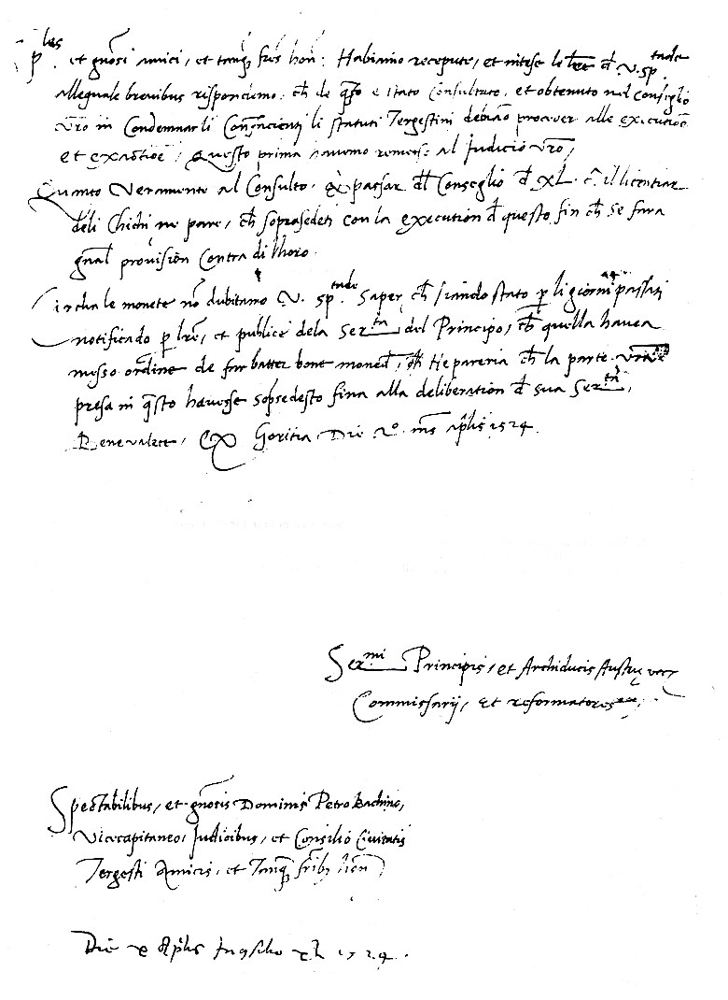
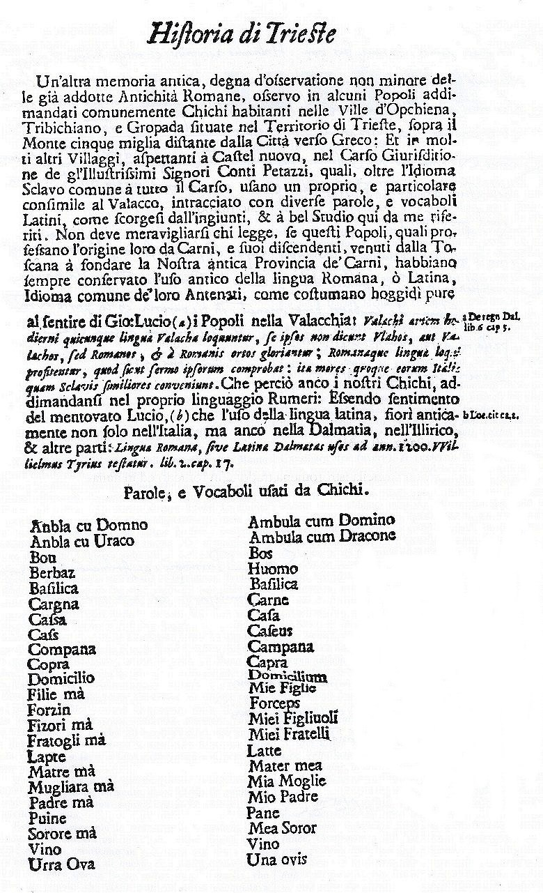
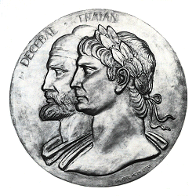
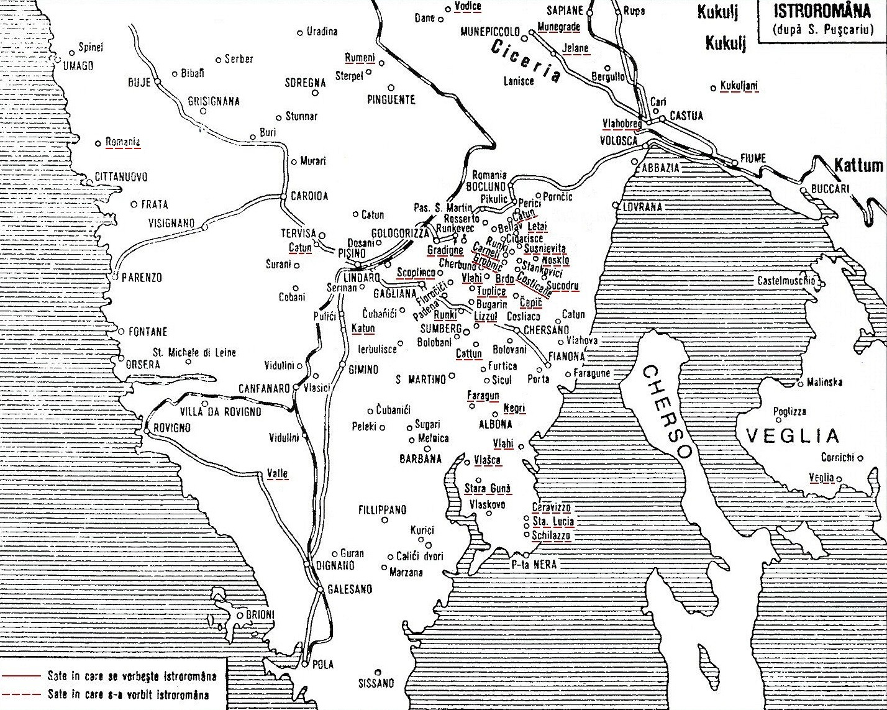

Il concetto di "isola latina nei Balcani" è normalmente applicato alla Romania, poichè essa rappresenta l'entità culturale e politica più rilevante della latinità nell'Est Europa. In realtà ci sono altre 3 "isole" di latinità che rappresentano anche le tre zone dove sono parlati i tre dialetti della lingua Romena: il meglenoromeno a nord di Salonicco; l'aromeno in Macedonia, Epiro e Tessaglia; l'istroromeno in Istria1.
Come già ho trattato in occasione del mio intervento durante il convegno sulle Letterature di Frontiera dell'Università di Trieste nel 19922, la frammentazione del mondo latino ha generato anche queste exclavi di popolazioni romene che hanno tutte una loro storia diversa, ma che tutte ora rappresentano delle minoranze linguistiche e culturali in contesti di egemonia di lingue e culture diverse da quella neolatina o romanza, di cui fanno parte.
Ora però voglio trattare in particolare una di queste minoranze, la più piccola e la meno conosciuta ma non per qùesto la meno importante: quella degli istroromeni.
Ma cos'è una minoranza? Il Dizionario della lingua italiana Devoto - Oli descrive: "Gruppo di cittadini che nell'interno di uno Stato si distinguono per il ceppo etnico e culturale, la religione o la lingua"3.
Mentre la lingua è descritta, dagli stessi autori: "Insieme di convenzioni (fonetiche e morfologiche rispetto alla forma, sintattiche e lessicali, rispetto al significato) necessarie per la comunicazione orale e l'espressione scritta fra i singoli appartenenti ad una comunità etnica, politica, sociale, consacrate dalla storia, dal prestigio degli autori, dal consenso dei componenti della comunità che a esso dà il nome"4.
Nel caso degli istroromeni queste definizioni sono estremamente importanti poichè, come si vedrà in seguito, essi rappresentano sicuramente una entità linguistica e culturale, pur essendo molto meno rappresentativi di una minoranza etnica in senso completo. L'istroromeno infatti è una lingua consacrata dalla storia e dal consenso dei componenti della comunità, pur non avendo una tradizione letteraria.
Dopo questa premessa vuole ora passare ad una trattazione più dettagliata della Storia e della realtà degli Istroromeni, che si svolge in quei Balcani dove tante culture e popoli si sono incontrati e scontrati nei millenni passati e dove ogni comunità, grande o piccola, conserva in se le testimonianze di uomini che sono riusciti a tramandare fino ai giorni nostri la loro dignità, la I loro cultura, la loro storia.
Come detto precedentemente, la frammentazione del mondo latino tra occidente ed oriente, in seguito alle invasioni cosiddette "barbariche," generò, nei Balcani, molte "isole" liguistiche-culturali e non sempre le popolazioni riuscirono a mantenere la lingua e la cultura che Roma aveva esportato.
Le vicissitudini storico-politiche infatti portarono questi latini orientali a continui esodi nel sud-est europeo al fine di ricercare dei siti più sicuri per la loro esistenza.
Voglio ricordare che con il termine "vlahi" erano indicate tutte le popolazioni di origine latina e pertanto sia gli antenati dei "romeni orientali," che quelli dei cosiddetti "romeni occidentali," come li definì il Pușcariu, furoni chiamati "vlahi" dai popoli non latini5.
In seguito queste popolazioni diventarono in Dacoromania i valacchi e nel sud ovest balcanico morovlah (latini neri), mavrovalah ed infine morlac, i morlacchi6. I "Vlahi" li troviamo anche tra i cosiddetti "Uscocchi," che nel linguaggio slavo significa profugo, tra i quali si ritrovano elementi slavi ed elementi romeni che assieme cercavano di sfuggire alla dominazione turca nei Balcani7.
Le prime attestazioni di presenze di nomi di probabile origine romena in Dalmazia, si trovano in documenti del 1018 e del 1070 dove vengono citati tali: "Danulus" e "Negulus"8.
Un documento importante che attesta la presenza dei romeni occidentali fino al Friuli, è 1′inventario, datato il 1181, che viene fatto dalla Badessa Ermelinda sulle proprietà del suo monastero nel patriarcato di Aquileia, dove alcune terre sono date ai coloni: Murunt, Rădul e Singurel, nomi questi di sicura origine romena9.
Nei secoli successivi si trovano sempre più frequenti documentazioni che testimoniano la presenza di Valacchi e di Morlacchi, i quali arrivano fmo alle località sul mare Adriatico, molto spesso per scambiare i loro prodotti della pastorizia con il sale10.
Nel XIV sec. ci sono pastori "Vlahi" nelle vicinanze di Spalato, Traù, Sebenico, Zara ed anche nelle isole di Arbe e Pago11.
Nel 1321 risultano insediamenti di "Vlahi" sull'isola di Veglia12.
Nel 1329 troviamo "Vlahi" a Pinguente in Istria13. Dagli Atti del Senato di Venezia risulta che dal XV sec. i veneziani favorirono gli insediamenti di popolazioni Valacche nei loro territori dalmati e li denominano: Morlacchi14.
Nel 1449 ci sono lnsediamenti di Valacchi a Buie d'Istria15.
Nel 1463 Giovanni Frangipani dall'isola di Veglia trasferisce i propri coloni Morlacchi nella zona di Castelmuschio16.
La dignità delle tradizioni e della storia di questi Morlacchi vengono affermati con i 23 articoli del "Diritto valacco" (Vlasko pravo) del 18 marzo 1436 con il quale Giovanni Frangipani riconosce a queste popolazioni una serie di privilegi ed autonomie17.
Dopo lo spopolamento dell ‘Istria determinato dalla disastrosa invasione degli Ungheresi del 1412 e le terribili pestilenze degli anni 1427, 1437, 1465 e 1466 molti profughi romeni, morlacchi ed uscocchi, in concomitanza con l'avanzata dei Turchi nei Balcani, riparano nella penisola istriana18.
Le documentazioni, ora molto precise, attestano una molteplicità di insediamenti di popolazioni che vengono denominate morlacche, valacche ed uscocche durante il XVI sec. in quasi tutte le località interne dell'Istria con particolare densità nelle zone di Seiane e Mune e nella zona sotto il Monte Maggiore a Valdarsa19.
A questo punto nei documenti ritroviamo una nuova denominazione per le popolazioni vlahe e morlacche insediatesi in Istria quella dei Cicci. Tale nome deriva probabilmente dalla parola slava cic e cica che significa zio. Nel 1329 in un documento si trova citato il "Vlaho" Pasculus Chichio a Pinguente20.
Come popolazione, i Cicci appaiono però per la prima volta in un documento del 1463. Così infatti vengono definiti i Morlacchi provenienti da Veglia21.
 Anche nel territorio di Trieste già nel 1490 e poi successivamente nel 1500, 1510, 1516, 1517, 1523 appaiono citati i Cicci in documenti che si trovano presso l'Archivio della città, ricordati dal Kandler, e relativi al problema degli incendi che sono provocati dallo stanziamento in bivacco dei Cicci sull'altipiano.
Gli stessi sono detti "inutiles omnino sunt et non arant" (sono del tutto inutili e non arano) "Civitas Tergestina haberet maximam penuriam lignorum ab igne" (la città di Trieste ha grandissima mancanza di legna da ardere) "et territorio tergestinulli amplius non possunt deteriorare" (non possono deteriorare di più il territorio triestino" - Chichiis et Murlachis qui non sunt amasati aut terrena non habent in territorio tergesti - il fatto che se ne parli per tanti anni presuppone però che il problema non sia stato debellato22.
Infatti la permanenza nel territorio di Trieste dei Cicci è ancora rilevata da fra' Ireneo della Croce nel 1698 quali abitanti di Opicina, Trebiciano, Gropada ed altri territori triestini23.
 Successivamente sono detti Cicci solamente gli abitanti di Mune e Seiane, mentre acquisiscono il nome di Ciribiri quelli di Monte Maggiore, definizione, questa seconda, che deriva probabilmente dalla loro parlata (cine bine)24.
Questi insediamenti valacchi che, come abbiamo visto, si erano realizzati nel Friuli Venezia Giulia ed Istria in diversi momenti, tramite diversi itinerari e con una diversa intensità, dopo il 1700, conservano la propria identità culturale di lingua e di tradizioni di origine romena, solamente nei due luoghi dove si sono stabiliti in maggiore numero: nei territori di Seiane e Valdarsa.
La loro esistenza come comunità si basava soprattutto sulle attività dell'allevamento del bestiame, della pastorizia e dell'agricoltura, ed inoltre sulla produzione del carbone, derivato dalla macerazione del legname, che veniva venduto anche in città molto lontane. Dalla seconda metà del 1700 e per un lungo periodo, rilevante, per l'economia degli istroromeni, fù il commercio dell'aceto che essi acquistavano da varie località istriane e rivendevano, grazie ad una patente ricevuta da Maria Teresa, nell'ambito di tutto l'impero asburgico25.
Questi romeni occidentali, grazie alI'esperienza acquisita dalla loro più tradizionale occupazione della pastorizia che gli aveva portati con i loro greggi, per il fenomeno della transumanza, attraverso i Balcani, svolsero anche nel passato, importanti funzioni economiche e sociali, come quella dell'organizzazione del trasporto con le carovane, attraverso le infide strade balcaniche, di merci proprie come lana e latte o di merci che venivano scambiate tra gli abitanti della costa adriatica con quelli dell'interno26.
Una parte di romeni occidentali è ricordata anche quale uomini d'armi, questo ruolo ebbero infatti i coloni morlacchi che Giovanni Frangipani traferì da Veglia ai suoi possedimenti di terraferma27.
Il condottiero del principe Valacco Michele il Valoroso, Baba Novac, ritenuto un valacco della Bosnia, portò al suo seguito nella lotta contro i Turchi, a cavallo dei secoli XVI e XVII, un esercito di 6.000 uomini di cui facevano parte anche morlacchi28.
Forse il più famoso morlacco fu Gaspare Gratiani che, dopo essere stato alla corte del Sultano, divenne signore della Moldavia negli anni 1619-162029.
In termini più negativi sono ricordati i Cicci e Morlacchi in altre cronache e documenti relativi all'ordine pubblico. Infatti il contrasto tra la ricchezza dei territori circostanti e la loro povertà ed anche la loro stessa origine latina rafforzata dalla durezza di pastori nomadi, portò alcuni di loro al brigantaggio. Particolarmente intenso divenne tale fenomeno tra la fine del 1700 e l'inizio del 1800. Periodo che peraltro coincise con un momento storico particolarmente difficile per l'Europa, quando le guerre la sconvolsero portando dappertutto miseria, fame, disordine e delinquenza30.
Il fatto che la Cicceria diventò, dopo la pace di Presburgo (1805), la terra di confine tra il Regno d'Italia napoleonico e l'Austria favorì le scorrerie dei Cicci, sia per quanto riguarda operazioni di contrabbando che per quanto riguarda l'impunità dei reati che venivano commessi in Austria rifugiandosi poi nel Regno italico, sempre tra le comunità affini31.
Dopo la sconfitta dell'Austria e la completa dominazione francese sulla zona, una pesante repressione poliziesca francese nel 1810 pose fine a tale fenomeno32.
È importante la notazione del Kandler su questo problema di ordine pubblico: "l'educazione del popolo abbandonato del tutto, il promuoverne l'economia, sarebbe stato il miglior modo, che il terrore disgiunto da giustizia "33.
Con il 1800 entriamo in Europa in una nuova atmosfera culturale e politica, determinata dal romanticismo che afferma il culto delle tradizioni e del patrimonio spirituale dei singoli popoli. Da qui comincia anche l'interesse degli studiosi e dei letterati per il problema della lingua e della cultura istroromena. Già nel 1819 il sacerdote Ivan Feretic pubblica un articolo intitolato: Sulla lingua italiana, vegliota e valacca a Veglia34.
Nel 1825 Nicolò Udina degli Algarotti trascrive due preghiere vegliotoromene35.
Il Loewenthal nel 1840 nota le concordanze tra la lingua parlata a Valdarsa e la lingua romena36. Il primo però a cui va il merito di aver attratto l'attenzione degli uomini di scienza sulle prove della discendenza romena degli abitanti di Valdarsa è Antonio Covaz nel 1846 con la pubblicaJ zione, sulla gazzetta: "L'Istria," del suo studio "Dei Rimgliani o Vlahi d'Istria"37. Successivamente Pietro Kandler38 e Carlo de Franceschi39 trattano in più riprese il problema degli istroromeni. Il più approfondito studio sulla lingua istroromena è però dell'illustre glottologo goriziano Graziadio Isaia Ascoli sui suoi "Studi critici" del 186140.
In tre opere pubblicate nel 1862, 1880 e 1882 lo studioso slavista Miklosich concorda con l'Ascoli sulla natura romeno-danubiana del gruppo etnico dei romeni istriani41.
Il fiorire dell'interesse sugli istroromeni attrae anche lo studioso romeno Ioan Maiorescu che, nel 1857, fu un viaggio in Istria. Fondamentali risultano, per la conoscenza di questa popolazione, i suoi appunti di viaggio che vengono pubblicati per una prima volta nel 1874 da Titu Maioj rescu. In quelle pagine si ritrova l'entusiasmo dello Istudioso romeno che riesce a comunicare con gli abitanti di Valdarsa in romeno42.
L'importanza del lavoro di Maiorescu è data 1 dalla ricca documentazione che viene fornita sulle tradizioni, costumi ed anche sulla lingua parlata dagli istroromeni. Nell'edizione del 1900 del suo "Itinerario in Istria" ritroviamo anche interessanti notazioni riguardo alla vita famigliare e sociale degli istroromeni.
Da quelle pagine si possono ricavare alcune valutazioni sull'etnia di questo popolo e sui contatti che ha avuto con le popolazioni vicine.
Oltre ai numerosi matrimoni con gli slavi, viene ricordato dal Maiorescu la tradizione dei "trovatelli". Questi bambini erano, come li definisce lo studioso romeno, "i frutti del peccato dei plutocratici triestini" che un Istituto di Trieste affidava già da una decina d'anni alle famiglie istroromene fino alla maggiore età, previo il pagamento di un contributo. In quei tempi, secondo il Maiorescu, si trovano ben 300 di questi bambini presso le famiglie di Valdarsa e zone limitrofe. Molti di essi però rimasero in quei luoghi anche dopo la maggiore età e colà si sposarono acquisendo così la cultura delle famiglie che li avevano allevati43. Il Pușcariu successivamente ridimensiona tale numero44, però alcune mie ricerche fatte presso "l'Istituto dei Poveri di Trieste," ora denominato I.T.I.S., hanno confermato una certa ampiezza del fenomeno che si concluse dopo il 1860.
Queste notizie portano a considerare che, dal punto di vista etnico, una parte degli istroromeni sono di origine triestina, dai dati del Maiorescu circa il 10%, e che un'altra parte di essi, probabilmente circa il 30-40%, sono di origine slava. Interessante è a tale proposito lo studio su "Alcuni caratteri antropologici dei Cicci," pubblicato dal dott. Ugo Vram nel 1904, dal quale si possono rilevare delle specificità antropometriche ed antropologiche degli abitanti di Mune e Seiane45. Dunque anche la comunità istroromena attuò un processo di assimilazione di singole persone che diventarono, dal punto di vista culturale, anch'essi istroromeni, poichè fecero propria la lingua, le tradizioni e la cultura della popolazione che gli aveva accolti e tramandarono questi valori essi stessi. In campo europeo la seconda metà del 1800 si arricchisce dei fermenti nazionali che portano alla Costituzione degli attuali Stati che formano l'Europa. Per quanto riguarda la Romania nel 1859 assistiamo alla nascita dello Stato nazionale romeno, i cui fautori principali si formarono attraverso stretti rapporti con il Risorgimento italiano. Oltre a ciò, nella Romania stessa, in campo culturale, assistiamo sin dall'inizio del 1800 ad una rivisitazione ed ad una esaltazione dell'origine latina del popolo romeno.
Le ricerche sugli istroromeni e le pubblicazioni diventano sempre più approfondite negli ultimi 20 anni del 1800 con, tra gli altri, le opere del'Ive46, Gartner47, Weigand48, Nanu49 che contengono molte trascrizioni della lingua istroromena. Nel 1884 il prof. Urbas del Liceo di Trieste tiene una Conferenza alla sezione Litorale del Club Alpino tedesco-austriaco: I Cicci e la loro terra. Importante l'opera di Teodor Burada50. Un viaggio nei villaggi romeni dell'Istria, che viene pubblicata nel 1896 a Iasi e dove lo stesso riporta anche alcuni appelli della comunità istroromena alla Dieta italiana dell'Istria. Voglio citare il più appassionato degli stessi pubblicato sul "Il giovine pensiero" m. 17 del 26/11/1887:
|
Fratelli italiani:
Come ben sapete dimora fra voi da secoli una popolazione latina cbe non vi fa e non vi ha mai fatto del male. Questa popolazione è senza tregua tormentata da ogni sorta di sventure lagna; paga le imposte che le si rechiedono e non si lagna.
Tutti ci hanno dimenticati, soltanto voi quando a quando ve ne rammentate nei vostri scritti senza però decidervi find'ora a prestarci mano fraterna di aiuto, perchè possiamo anche noi ottenere il risveglio nazionale che l'umaniità el il progresso reclamano anche a favore di noi, poveri abbandonati.
Il nome di romeno che risuscita così in noi che in voi tante memorie di gloria comune non ha ha esso forse abbastanza forza per farvi decidere di venirci in aiuto nell'estremo momento della necessità?
Fratelli istriani nel santo nome della comune madre patria, vi preghiamo di non rifiutarci questo aiuto che la guistizia e l'equità domandano.
Forse qualcuno crederà che l'abbandono la nostra lingua e la dimenticanza di qualunque tradizione della noostra origine procederanno così rapidamente da far sparire in poco tempo le orme stesse di questi luoghi mfelici.
Speriamo però che voi, amati fratelli, alzerete la vostra voce a chi di raaione per redimerci dalle miserie intellettuali e morali.
|
Nel 1888 ci fu un dibattito alla Dieta su tale problema ed ulteriori appelli furono scritti nel 1896 e nel 1910, ma senza ‘alcun risultato.
Burada però fu importante poichè portò con se in Romania un giovane Andrei Glavina che fece studiare nelle scuole romene.
Nel 1899 appare Il Glossario Istroromeno di Arthur Byhan, un'opera lessicografica fondamentale sul dialetto istroromeno51.
Il più profondo e completo studio sulla lingua istroromena è senz'altro dovuto, in tale periodo, allo studioso di romanistica, originario di Albona, Matteo Bartoli. Egli attraverso viaggi di studio ed analisi di tutta la bibliografia sugli istroromeni pubblica tra gli anni 1900 e 1908, numerosi saggi ed articoli52.
Particolarmente ricche di informazioni nel campo folkloristico, onomastico e toponomastico sono le ricerche di Josip Popovic pubblicate tra il 1903 ed il 191453.
A livello di cronaca è da registrare l'incontro della Regina della Romania, Carmen Sylva, con gli istroromeni avvenuto ad Abbazia nel 191054.
L'interesse che le varie Nazioni europee hanno sui problemi delle minoranze, che sarà una delle cause della prima Guerra mondiale, e la numerosa ed appassionata bibliografia sugli istroromeni, unita alla profonda sensibiltà ed amore per la sua gente, porta il Maestro elementare di Valdarsa, Andrei Glavina, che grazie a Burada aveva studiato il romeno in Romania, a ricercare di risvegliare la coscienza nazionale dei suoi concittadini e di trasmettere la nobiltà della loro lingua e della loro cultura.
Ad Andrei Glavina si deve il primo libro scritto interamente in dialetto istroromeno: Calindam lu Rumeri din Istrie (1905)55. Però l'importanza del Glavina è soprattutto da ricondurre nel campo sociale. Infatti, nell'Istria italiana, il maestro istroromeno riesce ad aprire la prima scuola istroromena nel 1921 e nel 1922 viene che costituito il Comune di Valdarsa che adotta come simbolo la Colonna Traiana.
Purtroppo con la prematura scomparsa di Andrei Glavina, nel 1925, scompare anche la scuola romena56.
Non scompare però l'interesse per gli lstroromeni sia in Romania che in Italia, dove fino alla seconda guerra mondiale c'è una intensa attività di ricerca scientifica sulla cultura di questi romeni occidentali.
Lo studioso romeno che in assoluto ha dato il maggior contributo alla conoscenza della storia e della lingua degli istroromeni fu, senza dubbio, Sextil Pușcariu, la cui opera maggiore in questo campo è composta dai tre volumi degli "Studi Istroromeni" usciti rispettivamente nel 1906, 1926 e 192957.
Anche altri studiosi, come il Dragomir58 ed il Cantemir59, fanno importanti ricerche nei paesi abitati dagli istroromeni, sempre nel periodo tra le due guerre mondiali.
Leca Morariu inoltre pubblica nel 1928 il secondo libro, dopo quello del Glavina, scritto in istroromeno60.
Comunque da questo momento in poi, non c'è scrittore romeno, storico o linguista, che non tratti del problema degli istroromeni.
In Italia dobbiamo ricordare il prof. Tagliavini che, tramite la sua rivista "Studi romeni" ed il centro Studi dell'Istituto per 1′Europa Orientale di Roma, pubblica diversi articoli e recensioni sugli istroromeni61.
Nel 1932 lo Stato italiano realizza una grande opera pubblica nella zona di Valdarsa, che non poca. rilevanza avrà per l'economia dei paesi circostanti: la bonifica del Lago d'Arsa62.
Sicuramente questo fatto provocò un miglioramento del livello e delle condizioni di vita degli istroromeni ivi residenti ma nel contempo sviluppò anche fenomeni di immigrazione che portarono al depauperamento della cultura istroromena, sempre più relegata tra le pareti domestiche.
Si colloca, sempre in tale periodo, un'iniziativa di uno studioso romeno, Sever Pop con l'approvazione dello Stato italiano e di quello romeno, attraverso la quale furono inviati a studiare in Romania due fanciulli, uno di Seiane ed un'altro di Valdarsa, per poter tramite costoro, al termine dei loro studi, riaprire la scuola romena nei due paesi istriani.
Purtroppo la seconda guerra mondiale ed il regime comunista instauratosi in Romania ed in Jugoslavia cancellarono, poichè considerati iniziative di regimi fascisti, questi buoni propositi di conservazione della cultura istroromena.
Un duro colpo venne inferto alla comunità istroromena, durante l'ultima fase della seconda guerra mondiale, con le distruzioni delle case e soprattutto delle chiese, assieme a tutti gli archivi parrocchiali, che la furia nazista attuò quale rappresaglia alle azioni partigiane ed istituì un lager a Seiane.
A livello scientifico continuarono anche nel dopoguerra, seppur più diradate, le pubblicazioni sugli istroromeni. Possiamo ricordare tra gli altri Radu Flora63 ed Augustin Kovačec64.
L'attenzione sugli istroromeni è viva soprattutto nelle opere di linguistica romena dove si accendono dibattiti scientifici. Ad esempio le tesi di Alexandru Graur65 e di Ion Coteanu66, che considerano l'istroromeno una vera e propria lingua invece che un dialetto della lingua romena, sono in parte contestate da Gheorghe Ivănescu67 e da Alexandru Rosetti68 nelle loro fondamentali opere sulla Storia della lingua romena.
Ma quanti sono gli istroromeni? Questa domanda è stata oggetto di diverse ricerche che hanno portato ad una definizione massima di 6/7000 persone nel secolo scorso69. Mentre l'ultimo censimento jugoslvavo del 1991, la zona dell'Istria dove vivono gli istroromeni attuali ora è totalmente in Croazia, riporta che 810 persone si sono dichiarate romene e 22 morlacche su un totale di 757.051 abitanti dell'Istria70.
 In realtà questo numero è sicuramente maggiore, poichè molti istroromeni che vivono a Fiume od in altre città della Croazia non si sono dichiarati come tali ed altri si trovano ancora più lontano.
Ciò si può spiegare con la povertà delle risorse della zona che ha portato molti istroromeni ad emigrare in tutto il mondo. Un consistente numero vive in Italia, a Trieste in particolare, e molti negli Stati Uniti. A New York la comunità degli istroromeni conta circa 500 persone, altri ancora si trovano in Germania ed in Svizzera. In questi ultimi anni, nonostante il conflitto nei Balcani e la condizione di Paese belligerante della Croazia, l'interesse per gli istroromeni e per la loro cultura, conservatasi miracolosamente per oltre un millennio nonostante la mancanza di una loro tutela sia sociale che culturale, è uscito dagli ambiti scientifici ed accademici per giungere a livello politico e di opinione pubblica, da dove sono arrivati alcuni segnali incoraggianti.
Probabilmente la più recente attenzione europea verso i problemi delle minoranze, anche se rimane purtroppo ancora più formale che sostanziale, il convegno internazionale a livello di Governi si è chiuso a Bucarest ne11994, e la drammaticità dell'incuria per questa cultura, che potrebbe portare tra breve ad una sua scomparsa, hanno toccato gli animi più sensibili.
Un rinnovarsi di iniziative con tra l'altro: riproduzioni di libri in istroromeno; visite a Seiane e Valdarsa; mostre a Trieste sugli istroromeni dell'Associazione di amicizia italo-romena Decebal; articoli apparsi sulla Voce del Popolo di Fiume, su il Piccolo di Trieste e su quotidiani romeni e svizzeri; servizi filmati della Televisione slovena e croata e radiofonici della Rai di Trieste; convegni e ricerche dell'Unione degli Istriani di Trieste, convegni all'Università di Trieste e alla Associazione Dante Alighieri, al Rotary Club di Trieste, la costituzione a Trieste dell ‘ Associazione dei romeni d'Istria "Andrei Glavina" ed ancora un prestigioso articolo di Claudio Magris sulla prima pagina culturale del Corriere della Sera ed altre iniziative in Croazia, hanno caratterizzato l'attività di questi ultimi anni.
Anche lo Stato romeno ha preso coscienza di ciò, come attestano le visite della diplomazia romena di Zagabria a Valdarsa ed i protocolli siglati tra lo Stato romeno e quello Croato, dopo le visite del Presidente della Croazia in Romania e del Primo Ministro romeno in Croazia.
Importante sembra essere il 1996 che è iniziato con la pubblicazione di un libro sul Comune istroromeno di Valdarsa della prof.ssa Feresini, edito dall'Unione degli Istriani e si chiude con questa iniziativa dell'Associazione Decebal.
Sicuramente ora bisogna operare nel concreto, poichè il dialetto istroromeno è parlato solamente a Seiane e Valdarsa da un numero limitato di persone, per lo più anziane. I giovani istroromeni, non ce ne sono molti, capiscono il dialetto ma non tutti lo parlano, poichè la lingua necessaria per i rapporti sociali è il croato.
Voglio concludere con un appello per far sì che non muoia questa cultura, con la quale cadrebbe l'oblio su innumerevoli generazioni di antenati, che hanno espresso in istroromeno per molti secoli le prime parole, i loro sentimenti di amore, la speranza e l'afflizione, nonché le ultime parole rivolte ai loro cari. Con la morte di una cultura muore qualcosa di ognuno di noi; bisogna impedire che questo processo diventi irreversibile.
di cav. dott. Ervino Curtis
Note bigliografiche:
- G. Ivănescu - Istoria limbii române - Ed. Junimea - Iași 1980 -pag. 80.
- Atti Convegno - L'integrazione culturale nella nuova realtà europea - vol. Il - Ed. Bulzoni - Roma 1994 - E. Curtis - La romanità nei Balcani: ma esiste ancora? - pagg. 75/85.
- G. Devoto e G.C. Oli - Il dizionario della lingua italiana - Ed. Le Monnier - Firenze 1990.
- G. Devoto e G.C. Oli - Op. cit.
- S. Pușcariu - Studii istroromâne - Ed. Cultura națională - București 1926 - Vol. II - pag. 4.
- S. Pușcariu - Op. cit. - pagg. 4/13.
- S. Pușcariu - Op. cit. - pagg. 18/23.
- S. Pușcariu - Op. cit. - pag. 13.
- F. Kos - Gradivo za zgodovino slovencev o srednjem veku - Vol. IV - Ljubljani 1915 - pag. 329.
- A. Kovačec - Descrierea istroromânei actuale - Ed. Academiei R.S. România - 1971 - pag. 26.
- A. Kovačec - Op. cit. - pag. 26.
- G. Vassilich - Sui romeni d'Istria - Estratto da Archeografo triestino - Nuova Serie - Vol. XXIII - Trieste 1900 - Fasc. 1 - pag. 26.
- A. Kovačec - Op. cit. - pag. 28 e S. Pușcariu - Op. cit. - pag. 30.
- S. Pușcariu - Op. cit. - pag. 14.
- S. Pușcariu - Op. cit. - pag. 31.
- A. Kovačec - Op. cit. - pag. 28.
- S. Pușcariu - Op. cit. - pag. 9.
- G.G. Corbanese - Il Friuli, Trieste e l'Istria - Vol. 1 - Ed. Del Bianco - 1983 - pagg. 316/325.
- S. Pușcariu - Op. cit. - pagg. 31/32 e G.G. Corbanese - Op. cit. - pagg. 320/324.
- S. Pușcariu - Op. cit. - pagg. 30.
- A. Kovačec - Op. cit. - pag. 28.
- P. Kandler - Raccolta delle Leggi ordinanze e regolamenti speciali per Trieste - Trieste 1861 - pagg. 8/10.
- G. M. Manaruta (Ireneo della Croce) - Historia sacra e profana della città di Trieste - Venezia 1725 - pagg. 334/335.
- S. Pușcariu - Op. cit. - pag. 44.
- G. Stradner - Schizzi dall'Adria - II Istria - Ed. F.H. Schimpff - Trieste 1903 - pag. 21.
- G. Vassilich - Op. cit. - pagg. 50/51.
- A. Kovačec - Op. cit. - pag. 27.
- C.C. Giurescu - Istoria românilor - VoI. II - Parte 1 - Ed. Fundația pentru literatură și artă "Carol II" - București 1940 - pagg. 270/295.
- C.C. Giurescu - Op. cit. - pag. 388.
- u. Cova - Alpi Giulia - Rassegna Sez. triestina del C.A.I. - Ed. Società alpina delle Giulie - Anno 67 - 1972 - pagg. 29/51.
- U. Cova - Op. cit. - pagg. 41/42.
- U. Cova - Op. cit. - pagg. 43/47.
- V. Scussa - Storia cronografica di Trieste dalle sue origini sino all'anno 1695, cogli annali dal 1695 al 1848 del Procuratore Civico cav. PIETRO dott. KANDLER - Ed. Italo Svevo - Trieste 1986 - pag. 235.
- S. Pușcariu - Studii istroromane - Ed. Cultura Națională - VoI. III - București 1929 - pag. 6.
- S. Pușcariu - Op. cit. - pag. 11.
- S. Pușcariu - Op. cit. - pag. 11.
- S. Pușcariu - Op. cit. - pag. 12.
- V. Scussa - Op. cit.; P. Kandler - Op. cit. -e - L'Istria - Trieste 1851 - pagg. 78/80; etc.
- C. De Franceschi -L'Istria - Trieste 1852 - pagg. 225/ 238 e - L'Istria, Note Storiche - Parenzo 1879pagg. 369/371; etc.
- S. Pușcariu - Op. cit. - pag. 21.
- S. Pușcariu - Op. cit. -pag. 22.
- I. Maiorescu - Itinerar în Istria și vocabular istriano român - Il Edizione pubblicata da T. Maiorescu - Ed. Libreriei Socecu - București 1900.
- I. Maiorescu - Op. cit. - pagg. 58/59.
- S. Pușcariu - Op. cit. - nota 5) - pagg. 43/44.
- U.G. Vram - Su alcuni caratteri antropologici dei Cicci - Tipografia del Lloyd - Trieste 1904.
- S. Pușcariu - Op. cit. - pag. 46.
- S. Pușcariu - Op. cit. - pag. 48
- S. Pușcariu - Op. cit. - pagg. 64/71.
- S. Pușcariu - Op. cit. - pagg. 70/72.
- S. Pușcariu - Op. cit. - pag. 72.
- A. Byhan - Jahresbericht des Institut fiir rumanische Sprache - VI Leipzig - Barth - 1899 - pagg. 174/396.
- S. Pușcariu - Op. cit. - pagg. 79/140.
- J. Popovici - Dialectele romine - Ed. Halle 1909.
- S. Pușcariu - Op. cit. - Nota 5 - pag. 51.
- A. Glavina e C. Diculescu - Calindaru lu rumeri din Istrie - București 1905.
- G. Ivănescu - Op. cit. - pag. 729.
- S. Pușcariu - Studii istroromâne - Ed. Cultura Națională - București - Vol. I (1906); Vol. II (1926); Vol. III (1929).
- I. Dragomir - Vlahi și morlacii - Cluj 1924; etc..
- T. Cantemir - Texte istroromine - Ed. Academiei R.P. Romine - Cluj 1959.
- L. Morariu - Libru lu rumeri din Istrie - Cernăuți 1925.
- C. Tagliavini - Studi Romeni - Pubblicazioni dell'Istituto per l'Europa Orientale - Roma - Vol. I (1927); Vol. II (1927); Vol. III (1928); Vol. IV (1929/1930).
- A. Diana - La bonifica nell'Istria - Convegno per la ripresa economico-agraria delle Venezie - Venezia 1946 - pagg. 24/100.
- R. Flora - Despre stadiul actual al istroromânei în fonetică și dialectologie - IV - 1962 - pagg. 135/170.
- A. Kovačec -Op. cit..
- A. Graur - Studii de lingvistică generală - București 1955 - pagg. 124/127.
- I. Coteanu - Cum dispare o limbă (istroromâna) - București 1955 - pagg. 7/16 e 34.
- G. Ivănescu - Op. cit. - pagg. 32/36.
- A. Rosetti - Istoria limbii române - Ed. științifică și Enciclopedică - București 1986 - pagg. 549/552.
- S. Pușcariu - Op. cit. - Nota 5 - pagg. 40/43.
- Quotidiano "La Voce del Popolo," Tabella con censimento 1991 in Croazia - 28/4/1994 pag. 10.
November 5, 1992
© 1992 Carta Europea delle Lingue Regionali o Minoritarie, Associazione di Amicizia Italo-Romena Decebal